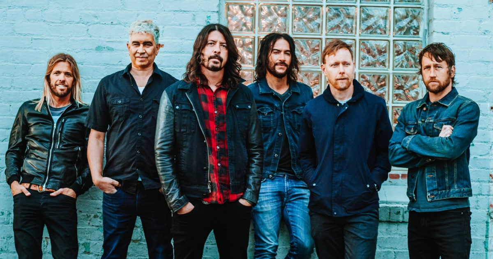

Tentang Foo Fighters
Foo Fighters adalah band rock berasal dari Seattle, Washington, Amerika Serikat. Dibentuk pada tahun 1994 oleh drummer Nirvana yaitu Dave Grohl setelah kematian Kurt Cobain. Nama band ini terinspirasi dari UFO atau objek-objek terbang misterius yang sering terlihat oleh para pilot pesawat sekutu di Perang Dunia II, yang dikenal secara kolektif sebagai Foo Fighter. Di band ini Grohl sendiri bermain sebagai gitaris dan vokalis. Selama perjalanan karier band ini, empat dari album nya telah memenangkan 11 Grammy Awards diantaranya memenangkan Best Rock Album empat kali.
Gaya Musik
Ketika pertama kali Grohl mulai bermain dengan band ini, musiknya sering dibandingkan dengan band dia yang sebelumnya yaitu Nirvana. Grohl mengakui bahwa Nirvana terutama penyanyi / gitaris Kurt Cobain adalah pengaruh besar pada penulisan lagunya. Grohl mengatakan bahwa "Melalui Kurt, aku melihat keindahan minimalisme dan pentingnya musik yang dipreteli. Foo Fighters juga memanfaatkan teknik pergeseran antara verse tenang dan chorus keras, dan juga Grohl pernah mengatakan dia dipengaruhi oleh anggota Nirvana " yang menyukai Knack, Bay City Rollers, The Beatles, ABBA dan sebanyak yang kita suka Flipper dan Black Flag, saya kira " menulis dan merekam lagu untuk album pertama Foo Fighters semuanya dilakukan oleh dirinya sendiri., Grohl menulis riff gitar menjadi seperti berirama . Ia mendekati kepekaan terhadap gitar dengan cara yang mirip dengan bermain sebuah drumkit , menetapkan bagian drum yang berbeda untuk string yang berbeda pada instrumen. Hal ini memungkinkan dia untuk mengumpulkan lagu dengan mudah, ia berkata, "Aku bisa mendengar lagu di kepalaku sebelum selesai." Setelah semua personil telah lengkap, teman-teman band ikut membantu pembuatan lagu.
Para anggota Foo Fighters berbaur dengan elemen melodi yang lebih berat. Grohl mencatat pada tahun 1997, "Kita semua cinta musik , apakah itu The Beatles atau Queen atau punk rock saya pikir iming-iming punk rock adalah energi dan kedekatan;. Yang perlu thrash Tetapi pada saat yang sama kita semua menyukai melodi yang indah, kau tahu itu sangat alami?. "Grohl mengatakan pada tahun 2005," saya suka berada di sebuah band rock, tetapi saya tidak tahu apakah saya selalu ingin berada di sebuah band rock alternatif dari tahun 1990-an selama sisa hidup saya. "Grohl mencatat bahwa tur akustik bandnya itu seperti upaya untuk memperluas sound groupnya.